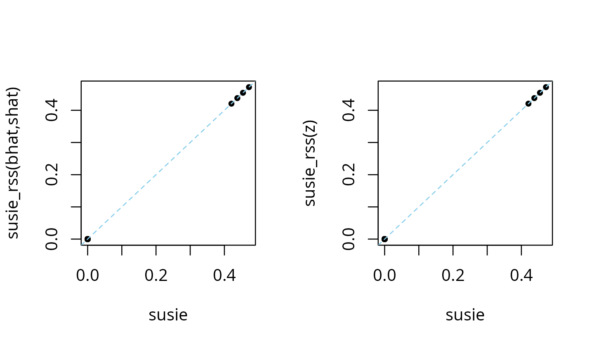

Compare susie_rss variants
Peter Carbonetto
2022-10-11
Source:vignettes/susie_rss.Rmd
susie_rss.RmdIn this vignette, we briefly illustrate the different ways susie_rss
can be called, and draw connections between running
susie_rss on summary data, and running susie
on individual-level data.
Simulate a data set with 200 samples and 1,000 variables, in which the only first 4 variables affect the outcome.
set.seed(1)
n <- 200
p <- 1000
beta <- rep(0,p)
beta[1:4] <- 1
X <- matrix(rnorm(n*p),nrow = n,ncol = p)
X <- scale(X,center = TRUE,scale = FALSE)
y <- drop(X %*% beta + rnorm(n))Compute summary statistics \(\hat{b}_j, \hat{s}_j\) and the correlation matrix, \({\bf R}\). These quantities will be provided as input to susie_rss.
ss <- univariate_regression(X,y)
dat <- compute_suff_stat(X,y,standardize = FALSE)
R <- cov2cor(dat$XtX)The susie and susie_rss analyses produce the exact same results when
the summary statistics bhat, shat,
var_y and n are provided to susie_rss (and
when R is an “in sample” correlation estimate—that is, when
it was computed from the same matrix X that was used to
obtain the other statistics). If the covariate effects are removed from
the genotypes in univariate regression, the in-sample LD matrix should
compute from the genotype residuals where the covariate effects have
been removed.
res1 <- susie(X,y,L = 10)
res2 <- susie_rss(bhat = ss$betahat,shat = ss$sebetahat,R = R,n = n,
var_y = var(y),L = 10,estimate_residual_variance = TRUE)
# HINT: For estimate_residual_variance = TRUE, please check that R is the "in-sample" LD matrix; that is, the correlation matrix obtained using the exact same data matrix X that was used for the other summary statistics. Also note, when covariates are included in the univariate regressions that produced the summary statistics, also consider removing these effects from X before computing R.
plot(coef(res1),coef(res2),pch = 20,xlab = "susie",ylab = "susie_rss")
abline(a = 0,b = 1,col = "skyblue",lty = "dashed")When some but not all of these statistics are provided, the results should be similar, but not exactly the same.
Next let’s compare the susie and susie_rss outputs when \({\bf X}, y\) are standardized before computing the summary statistics (by “standardize”, we mean that \(y\) and the columns of \({\bf X}\) are each divided by the sample standard deviation so that they each have the same standard deviation).
ss <- univariate_regression(scale(X),scale(y))
dat <- compute_suff_stat(X,y,standardize = TRUE)
R <- cov2cor(dat$XtX)Then we compute the z-scores:
zhat <- ss$betahat/ss$sebetahatWhen standardizing, providing susie_rss with summary data
z (or bhat, shat), R
and n is sufficient for susie_rss to recover the same
results as susie:
res1 <- susie(scale(X),scale(y),L = 10)
res2 <- susie_rss(bhat = ss$betahat,shat = ss$sebetahat,R = R,n = n,
L = 10,estimate_residual_variance = TRUE)
res3 <- susie_rss(zhat,R,n = n,L = 10,estimate_residual_variance = TRUE)
layout(matrix(1:2,1,2))
plot(coef(res1),coef(res2),pch = 20,xlab = "susie",
ylab = "susie_rss(bhat,shat)")
abline(a = 0,b = 1,col = "skyblue",lty = "dashed")
plot(coef(res1),coef(res3),pch = 20,xlab = "susie",ylab = "susie_rss(z)")
abline(a = 0,b = 1,col = "skyblue",lty = "dashed")
When the residual variance is not estimated in susie_rss, the susie_rss results may be close to susie, but may no longer be exactly the same:
res4 <- susie_rss(zhat,R,n = n,L = 10)
plot(coef(res1),coef(res4),pch = 20,xlab = "susie",ylab = "susie_rss")
abline(a = 0,b = 1,col = "skyblue",lty = "dashed")
Whenever R is an “in sample” correlation matrix, we
recommend estimating the residual variance.
Without providing the sample size, n, the coefficients
are interpreted as the “noncentrality parameters” (NCPs), and are
(roughly) related to the susie parameters by a factor of \(\sqrt{n}\):
res5 <- susie_rss(zhat,R,L = 10)
plot(coef(res1),coef(res5)/sqrt(n),pch = 20,xlab = "susie",
ylab = "susie_rss/sqrt(n)")
abline(a = 0,b = 1,col = "skyblue",lty = "dashed")
Whenever possible, the sample size, or a reasonable estimate of the sample size, should be provided.